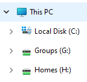
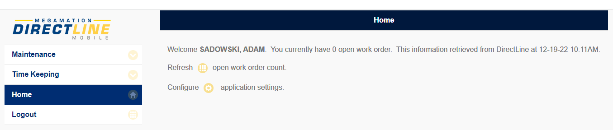

flowchart LR
A[Person] --> B(Megamation Software)
B --> C{Export Definition Wizard}
C --> D[Automatic Report]
C --> E[Manual Report]
flowchart LR
A[Person] --> B(Megamation Software)
B --> C{Export Definition Wizard}
C --> D[Automatic Report]
C --> E[Manual Report]
Barb makes the name signs. Ask her if you need one.

H:
Each person has a part of it
Documents is a mirror (a link to your H: drive space) & is backed up
G:
We generally like to help each other. That said, the person working for Claudia before the data analyst position was created received requests so much so that Claudia had to taper them down.
The data analyst position is more for data projects, but for Megamation queries. The latter are to be done through Megamation, and tailored reports there can be made for individuals.
Let Claudia know of any requests that come through, as she will help prioritize them/decide if they are within the role of the data analyst.
Work starts at 8:30. Lunch anytime. We generally leave at 4:30.
However this is flexible. If you want to start at 8, and leave at 4, that’s ok. Lunch also does not need to be exactly 1 hour.
People come in Monday to Friday but the IT departments takes 2 afternoons to work from home in order to focus. They prefer to be away from the office on these days due to the number of requests they receive. As a data analyst, you can work from home two full days of the week in order to be as undistracted as possible.
We don’t use time-cards anymore. We use DirectLine of Megamation.
Use Time Keeping for inputting vacation, sick leave, etc. NB Date is set to current day; set it right or it will be rejected.
Claudia often has a closed door as she speaks loud (her words). If she’s on the phone, just poke head in her window & wave. She will give thumbs up/down on whether you can come in.
You can use Outlook to book meeting rooms for individual use using locations PR meeting room 103 010 106 and 105.
In the stand-alone Outlook application, Scheduling Assistant is great to see when someone is busy.
For larger meetings, you ca book meeting rooms with Barb.
Admin. rights were granted to the desktop in the process of trying to solve a 0x1 error in Task Scheduler. This error does not stop task completion, and I solved the error by using UNC paths (as opposed to drive letters) in the scheduled script. Hence, admin. rights may not actually be necessary on the desktop.
The following applies if desktop has no administrator rights:
The desktop will not have administrator rights due to our internal IT responsibility
If needed, you can ask Andrew on Teams and he can remote enter passwords
Admin login is needed for many programs:
Keypirinha is a great program for typing to find files as opposed to using File Explorer
R command RInno::install_inno() is needed to turn R Shiny applications into standalone executables
KeepassXC for password management (or since it was hacked according to Chris Payne, though I believe he confused the program with another), use PMP (on campus) instead
RStudio updates
Batch Job Rights in order to fix Windows Taskscheduler error 0x1
For rights, alert IT to https://www.urtech.ca/2019/06/solved-this-task-requires-that-the-user-account-specified-has-log-on-as-batch-job-rights/
For fixing the 0x1 error, see https://redstapler.co/fix-task-scheduler-0x1-error/
The stockroom can supply toques, shirts (polos, dress), sweaters, fleece, and jackets. The stockroom supplies the university with a lot. COVID-19 PPE was supplied through the stockroom, and departments realized what else the stockroom can provide. Hence business boomed.
Claudia can approve items you would like.
IT will provide you with a laptop.
If a new chair is needed and apporved by Chris or Claudia, you may book an appointment with Occupational Health & Wellness for a chair fitting.
Adam was fitted with a Steelcase Leap Feb. 2, 2023.
Personal humidifiers can also be supplied if the building’s relative humidity cannot be increased in the winter to 40-50%.